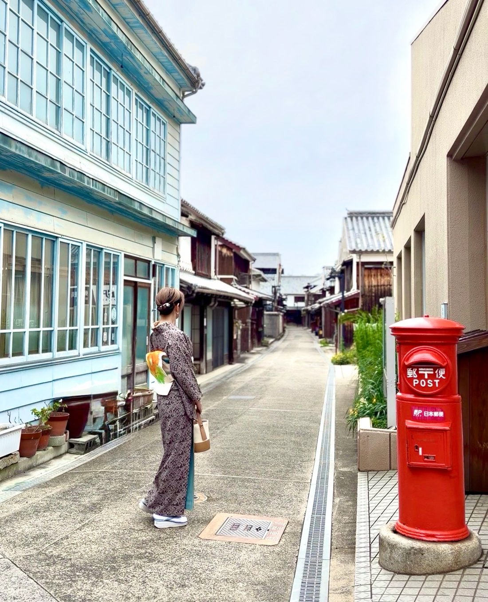

KIMONO SUNAO — CERTIFIED TEACHERS, CLASS 4
きものすなお認定講師4期生、12人をご紹介します。十二人十二色。教え方も、得意なことも、それぞれに。あなたにぴったりの先生を、見つけてください。
無理な販売はしません。教えることに、出し惜しみはしません。特別な道具に頼らず、あなたの手持ちのもので。受け継いだ着物も、新しい着物も。アンティークも、カジュアルも、もちろんフォーマルも。着物を楽しむ、あなたに寄り添う先生たちです。

MITARAI — KURE, HIROSHIMA01 / FIND YOUR AREA
12人の先生は、北海道から広島まで各地で活動しています。色のついた都道府県を選ぶと、その地域の先生のところへご案内します。
● 地図は活動地域の目安です。教室の正確な所在地ではありません。出張やオンラインに対応する先生もいます。詳しくは各先生のInstagramでご確認ください。
02 / MEET THE TEACHERS
全員が、きものすなお4期の認定講師です。写真と自己紹介を読んで、気になる先生を見つけたら、Instagramで日々の着物姿やレッスンの案内をのぞいてみてください。
ABOUT
「結い」は、きものすなお4期の認定講師を紹介するサイトです。活動地域、自己紹介、Instagramをまとめました。はじめて着物にふれる方も、もう一度学びたい方も、気になる先生の紹介を開いて、その人らしさにふれてみてください。
レッスンの内容、会場、料金、日程は先生ごとに異なります。申し込みや問い合わせは、各先生のInstagramから直接どうぞ。このサイトでは、申し込みの受付や販売は行っていません。
FAQ
大丈夫です。初心者向けのレッスンを行う先生が多くいます。「初心者歓迎」の印がついた先生は、はじめての方への対応を特に案内している先生です。まずは各先生のInstagramを見て、雰囲気の合う先生に相談してみてください。
先生や教室によって、レンタルや貸し出しの有無が異なります。何を揃えればよいかの相談から受けている先生もいます。気になる先生のInstagramで確認するか、直接問い合わせてみてください。
料金は先生ごとに異なり、それぞれのInstagramやプロフィールのリンク先で案内されています。このサイトでは料金の掲載や申し込みの受付は行っていません。
できません。「結い」は紹介のためのサイトです。申し込みや問い合わせは、各先生のInstagram（DMやプロフィールのリンク）から直接お願いします。
このサイト自体は販売を行う場所ではありません。各先生の教室の方針は先生ごとに異なりますので、気になる場合は、申し込みの前にその先生へ確認してみてください。確認してから決めるのが安心です。